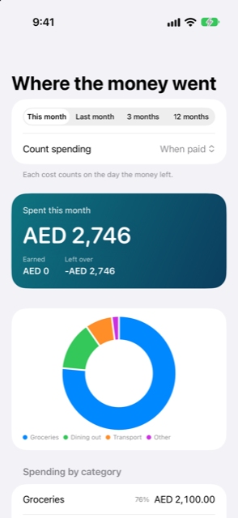

Guide › Insights
Where the money went
Spending by category, this month and last.
Where the money went is Damla's spending report. It shows what you spent, what you earned and what was left over, over the range you pick, by month and by category.

When to use it
- You want to see this month's biggest costs, and how they compare with last month.
- You want to see a year of spending by month, to spot the heavy seasons.
- You corrected a transaction and want to check how your reports changed.
- You want to see what came in as well as what went out, in one screen.
Step by step
- Open the Insights tab (the fourth of the five tabs).
- Tap Where the money went at the top of Insights. The row already shows this month's spending, and last month's.
- Pick a range at the top: This month, Last month, 3 months or 12 months.
- Under Range, use Count spending to choose which day a cost belongs to.
- Read the big card: Spent for the range, with Earned and Left over beside it.
- Scroll for the charts and the lists, described below.
How spending is counted
Two pickers sit at the top of the report: Range, and Count spending.
When paid counts each cost on the day the money left. A card purchase counts on the day you used the card, not on the day you paid the card bill. This is the usual view of what happened.
When it applies spreads yearly or prepaid costs over the months they cover — the months you gave the entry as the period it pays for. A period that starts on the first day of a month and ends on the last day of a month counts in equal parts. Any other period counts in proportion to the days in each month. This is the usual view for comparing months, so one unusual payment does not dominate a month.
What is on the screen
- Spent card: the total spent in the range, with Earned and Left over (earned minus spent) beside it.
- By month: a bar chart of spending, one bar per month. It appears when the range holds spending or income in more than one month.
- A donut chart: how the spending splits across categories, biggest portions first. It appears when there is more than one spending category.
- Spending by category: a list with each category's total and its share of spending as a percentage, biggest first. Categories with subcategories show their parts underneath.
- Income: what came in, by income category. This section appears only when the range holds income.
- Spent for: money you recorded as spending for another person, listed by that person. This section appears only when you have recorded spending for someone.
If nothing was spent in the period, the list says Nothing spent in this period.
One account at a time
The same report also opens for a single account. On the Accounts tab, open an account that shows a card — a bank, savings, wallet, credit card or loan. Tap the card to flip it over, then tap Spending on the back. The report then covers only the entries that touch that account, and the account's name is the page title. Investments, staged purchases and people open their own screens instead.
Good to know
- You can add, rename and remove categories in Settings under Categories. Tap Add, tap a category and edit Name, or swipe it and tap Remove. The report follows your changes.
- Card purchases count on the day you used the card, not when the statement was paid. Moving money between your own accounts is never spending and never income.
- The donut draws at most the eight biggest categories. Any others still appear in the totals and in the list below.
- This report is a record of what happened. It gives information, not advice about what to spend.
Related
Something unclear or missing? Write to support@raveniq.ai and say which page.